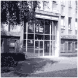

Exercice 1 : Divers
Reproduire la page web ci-dessous (que vous nommerez ufr.html) de la façon la plus fidèle possible

|
Unité de Formation et de Recherche
Mathématiques - Informatique - SPI
|

|
FORMATION LMD - Département Informatique
Les licences se dérouleront sur le campus .
Toutes les mentions des licences L1 et de la licence L2 se dérouleront aussi sur le campus.
LICENCE INFORMATIQUE
-
Informatique
-
Parcours Informatique
-
Parcours Mathématique
-
Parcours SPI
MASTER INFORMATIQUE - M1
MASTER - INFORMATIQUE - M2
-
Logiciels : Méthodes Formelles et Ingéniérie (LMFI)
-
Interaction, Perception, Apprentissage, Connaissance (IPAC)
-
Services, Sécurité des Systèmes et des Réseaux (SSSR)
-
Informatique et Décision (I&D)
CONTACTS
Indications
-
La page doit être écrite en noir sur blanc.
-
Les images sont disponibles dans images.zip:
-
On doit arriver :
- Sur la page d'accueil de l'université de Lorraine en cliquant sur le logo de l'université ;
- Sur la page d'accueil de l'UFR MIAE en cliquant sur la photo représentant l'entrée de l'UFR